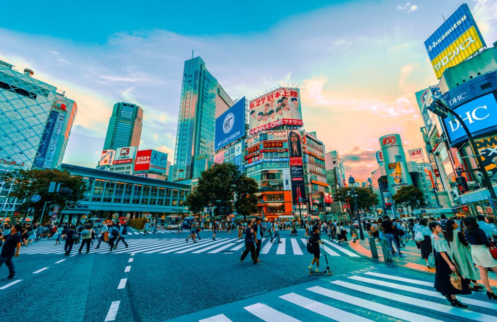
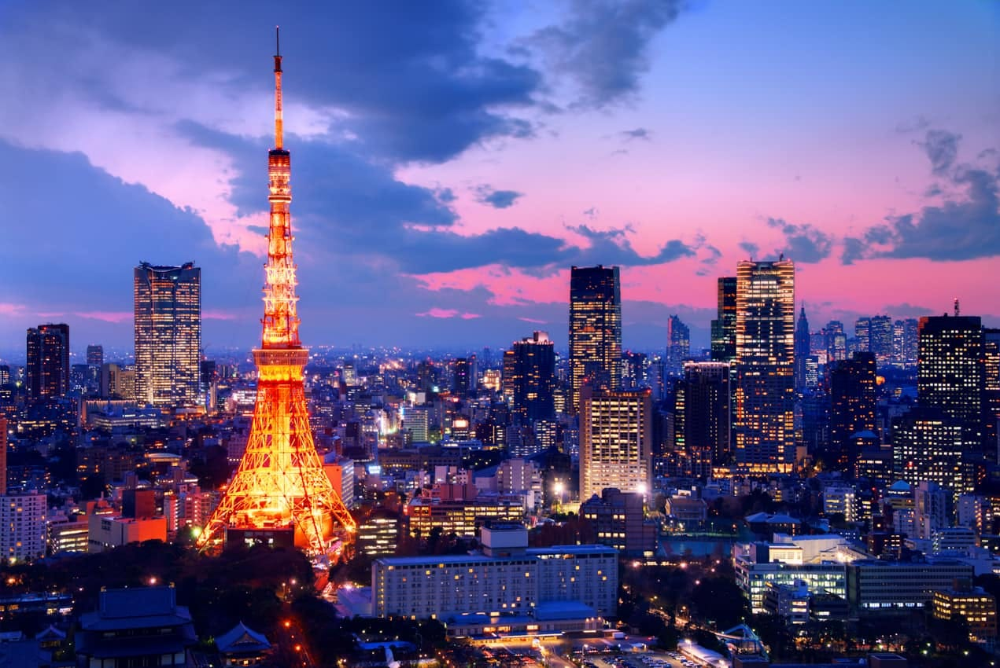
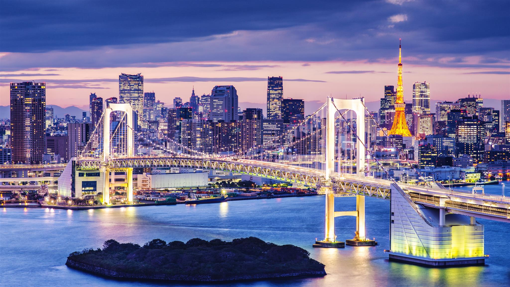

DESAFIO DAS IMAGENS
Imagens da cidade de Tokyo - Japão

Imagem de Tokyo-JPN com Legenda

Imagem que mostra a famosa torre de Tokyo, a qual eu
ouvi falar por meio de um anime e achei interessante tacar
nessa atividade :P
Img de Tokyo que Muda o Tamanho
